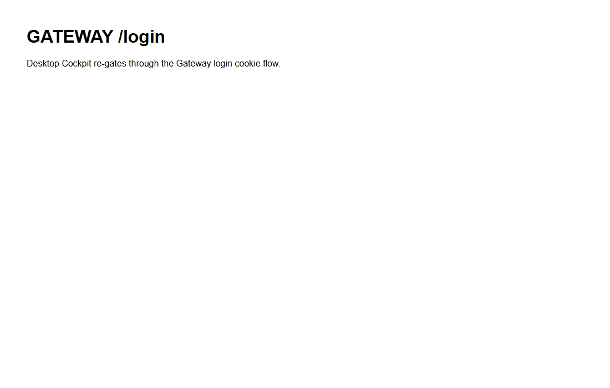
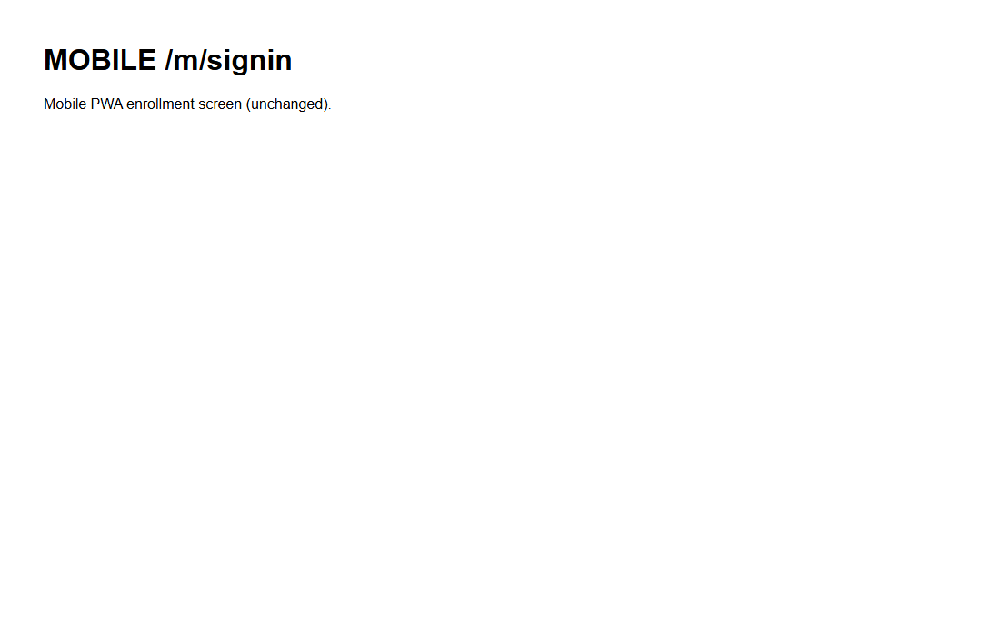

Title: Cockpit QA fix - desktop 401 must not redirect to the mobile /m/signin route.
PR: #1037 Branch: issue-1024-desktop-401-signin Epic: #967
QA method: Independent verification in an isolated worktree at the PR head. Unit tests re-run,
full build gate re-run, and the 401 behavior driven live in both shells with the roster poll's
GET /sessions forced to answer 401.
| # | Criterion | Expected | Actual | Result |
|---|---|---|---|---|
| 1 | Unit test asserts the desktop 401 targets the desktop sign-in (not /m/signin) and the mobile still targets /m/signin. |
Test passes; desktop target is /login?next=..., never /m/signin; mobile target is /m/signin. |
client.test.ts - 4 assertions pass (desktop /login?next=%2Fc%2Fsession%2Fabc%3Ftab%3Dterminal and asserts NOT containing /m/signin; mobile /m/signin; unconfigured default /m/signin). vitest: 79 passed / 6 files. |
PASS |
| 2 | LIVE - a 401 from the desktop roster poll navigates the desktop Cockpit to the desktop/Gateway sign-in (/login?next=...), not /m/signin. |
Final URL is /login?next=%2F; no navigation to /m/signin. |
Drove the running Cockpit dev build; intercepted GET /sessions to return 401 (served twice by the roster poll). Result: final_url = /login?next=%2F, went_to_m_signin = false. See qa-desktop-401.png. |
PASS |
| 3 | The MOBILE shell's 401 behavior is unchanged (still /m/signin) - the desktop fix did not break the shared client-core for mobile. |
Mobile 401 still navigates to /m/signin. |
Drove the running mobile PWA dev build with a seeded device key so the roster actually polls; forced GET /sessions to 401 (sessions_401_served = true). Result: final_url = /m/signin, went_to_login = false. See qa-mobile-401.png. |
PASS |
| 4 | No hardcoded /m/... path remains in shared client-core for the desktop path. |
Desktop path uses an injected redirect; only the mobile builder returns /m/signin. |
In client.ts the only /m/signin literal is inside mobileSignInRedirect() (the mobile builder / default). The desktop path uses gatewayLoginRedirect, injected by the Cockpit at startup (apps/cockpit/src/main.tsx line 49). onUnauthorized resolves the target via resolveSignInTarget; no /m is baked into the desktop path. |
PASS |
| 5 | Full build gate clean: cockpit build, lint (ingress lint / no absolute URLs), Gateway RunCockpitBuild=true, cc-director.sln. |
All build/lint steps succeed with 0 errors. | cockpit npm run build: built OK. npm run lint (eslint): clean, no output. Gateway dotnet build -p:RunCockpitBuild=true: Build succeeded, 0 Warning / 0 Error. dotnet build cc-director.sln: Build succeeded, 0 Warning / 0 Error. client-core vitest: 79 passed. |
PASS |

Desktop final URL: http://localhost:5817/login?next=%2F

Mobile final URL: http://localhost:5818/m/signin
onUnauthorized prevents a redirect loop when already on the sign-in entry).